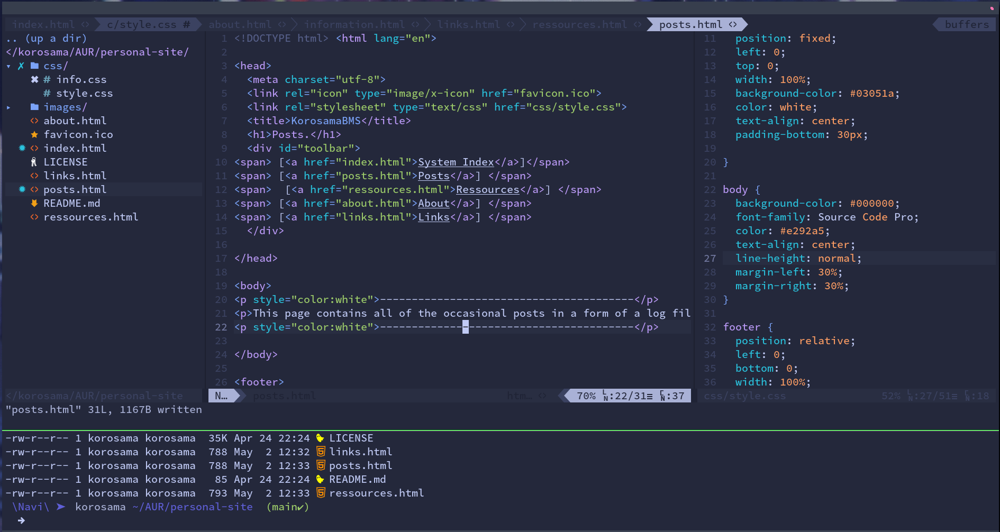

This page contains all of the occasional posts in a form of a log file. No sorting, C-f is your friend. Most entries will tackle various topics of my interest such as : Rythm games, Anime, Linux, Underground Music and litterature...
✦ ✦ ✦Antinatalism is the only Philosophy that proposes a robust solution to the amount of suffering experienced by consciousness(es) of the universe. The main argument proposed by many thinkers over the years (Schopenhauer, Benatar, de Giraud, Al-Ma'arri etc...) consists of the following : Non-existence is Always preferable to existence. The basis of this statement can be represented in this simple table :
existence | non-existence
---------------|---------------
Presence of Pain | Absence of Pain
(Bad) | (Good)
---------------|---------------
Presence of Pleasure| Absence of Pleasure
(Good) | (Bad)
The strength of the argument conveyed by this table can be improved given how Pleasure is a bottomless bucket. We humans are very much damned to a fate similar to the one of the Danaïdes. The human mind is constantly craving more and more pleasure, it doesn't have any limit. On the other hand, our biology imposes a upper limit to the amount of pleasure that can be experienced. Your brain can only produce so much pleasure hormones, and eventually the "pleasure receptors" in your brain will numb. Even billions of dollars, unlimited orgies, limitless access to the finest pleasures of this world, nothing will EVER suffice. The human wants more, always and forever more. We can deduce that no matter what, the human mind will experience desires and cravings that will not be fullfilled. This in turn will create suffering. Conclusion, with existence even the presence of Pleasure is bad.

Even though Antinatalism is the obvious solution, there is a reason why it is not well known and fiercely rejected by the large majority of breeder people.
My best guess is that Antinatalism threatens carnal pleasures such as unprotected sex. Seeing how Veganism is fiercely fought by basically every non-vegan for the same reason (the threatened carnal pleasure being tasty meat), it is very likely that i correctly identified the phenomenon at play.
“The anti-human, the merely animal, consists in staying within the sphere of feeling, and being able to communicate only at that level”. (1807, § 69).” Georg Wilhelm Friedrich Hegel
If you have a worthy argument against Antinatalism, please hit me up on Matrix (see About page).
Be kind to your future children, don't concieve them.
After almost 2 1/2 months of playing BMS with a controller, i can finally start to catch up to my keyboard level. Managed to dig into the satellite table and a few of the easier ★1's, kinda nice to have a larger selection of songs to play and not being forced to play the same 10 charts back to back. I think that scores are not worth sharing yet (being only low accuracy low sl0 clear (yes i play for lamps)) but still quite happy of the improvement.
The main thing that allowed me to ascend from strugling w/ easy ☆9 to obtaining decent scores on ☆11-11+ is radically changing my playstyle.
While getting into the IIDX/BMS rabbit hole, i've always been amazed by top rankers's playstyle being so smooth and snappy; but most importantly their ability to freestyle between multiple techniques involing a lot of cool hand movements flowing perfectly with the gracious notes of the music. The second that i got my BM between my hands, i swore an oath to never use boring static wrist scratch technique and to walk in the path of the cool freestyle DOLCE-like player. Huge Mistake. I spent countless hours trying to play the most basic stuff while continually transitioning between 3/5 thumb slide, 2/5 split, 北斗 and freeform. litterally zero improvement for weeks and even made me quit the game for a few days.

I am now free of the oath that i took and began adopting the 1048 technique as my main one and it does WONDERS. i am still thankfull that i practiced all of these other techniques that allow me to breeze through technical scratch sections.
I finally setteled on a website design, time for the first post i guess here i am, strugling to learn basic webdesign :
I think that i will need to get a little bit more used to writing websites before adding more posts. I just wanted to kind of mark the moment when i have finally figured how my first ever webpage will look.
Still need to dive in the webhosting rabbit hole tho ...